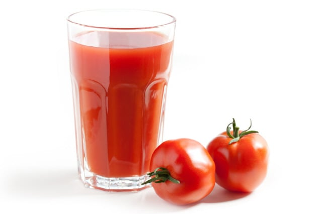
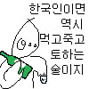

토마토 주스
비율은 주스:소주 8:2 ~ 7:3 정도
주스 자체의 맛이 상당히 강해서 소주를 타도 티가 잘 안남
그래서 이거 같이 마시는 사람들 훅 가고 그랬음
일종의 간이 짭 블러디메리

토마토 주스
비율은 주스:소주 8:2 ~ 7:3 정도
주스 자체의 맛이 상당히 강해서 소주를 타도 티가 잘 안남
그래서 이거 같이 마시는 사람들 훅 가고 그랬음
일종의 간이 짭 블러디메리
산토리 토마토마 와드
ㅇㅎ 그러니까 맘에 드는 사람한테 저걸 먹이면 된다는거지?
??? : 저 술 못마셔서요…그리고 다시는 말 걸지 말아주세요
제가요? 형이랑요? 왜요?
저 토마토 좋아해요. 개붕오빠는 싫어요.
형 저랑 한잔 해요
너 나랑 한잔하자!
소주향 튈거같은데..
블러디 메리란 칵테일이 보드카에 토마토주스임.
소주도 싸구려 보드카처럼 사용 가능하니 저정도는 가능함.
노맛+노맛
케찹 딱 대
그냥 안주맛으로 아무것도 섞는거 없이 마시는데 다음에 한번 해봐야지. 도마도주스
아메리카노
카프리썬이랑 1대1 비율 술술넘어감
8:2 비율이면 도수 3.2%...
홍초
오 뭐지이건......한번해볼까
쏘주가 과일음료랑 섞어 마시면 진짜 꿀떡꿀떡 마시다가 훅감 거의 깔루아 밀크급
왜 솔의눈 아님
바이탈 레몬에 두잔정도 타먹음
타바스코 소스를 곁들여 보시라구
아
토마토 주스랑 맥주랑 섞어서 마시는 레시피는 아는데
케찹 섞은 주스
과음으로 다음날 변기 붙들고 울기라도 하면 비명나오겠네 ㅋㅋㅋㅋㅋ
소주향 안나서 좋은거면 소주를 왜먹음 ㅋㅋ 다른술먹지
칵테일 같은 느낌으로 마시는 거 아닐까
쏘쥬도 좋지만 보드카에 꿀 조금 타먹으면 좀더 강한 도수로 먹을 숮있을거같음. 물론 내일은 없고
예전엔 홍초나 깔라만시 넣어서 먹었는데 소주 안먹은지는 존나 오래 된듯, 대신 저녁때 반주로 맥주 먹는데 몸에 안좋은건 맥주가 더 안좋다고 하더라
핫소스 넣으면 블러디메리 자너

이게 그 Bloody Mary란 칵테일 아닌가 ㅋㅋ
소주 .2 넣은걸 마시고 훅 가려면 주스를 몇병을 마셔야되는거야
https://malljapan.net/mall/view/goodsNo/6244
이거 맛있음